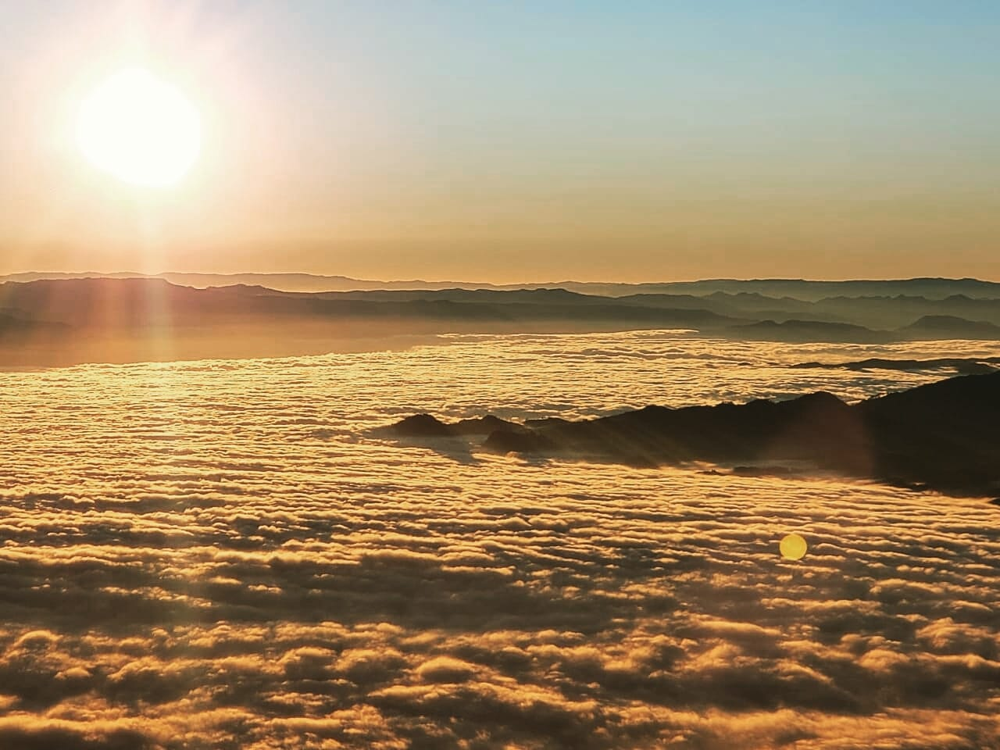

|
|
Honduras al Natural |
|
| Inicio | Artículos | Contacto |
RawacalaRawacala Rainforest Adventure EcoPark es un sitio espectacular completamente rodeado de naturaleza, perfecto para escapar de la ruidosa ciudad, donde puedes experimentar mucha diversión y adrenalina pura. Ver más >> |
|||
|  | CelaqueLos amantes de la naturaleza tienen en Celaque la dura tarea de ascender al punto de mayor elevación en Honduras. Ver más >> |
||
Montaña de PucaUn mar de nubes al pie de la montaña de Puca. La montaña de Puca está localizada en el departamento de Lempira. Ver más >> |
 |
||